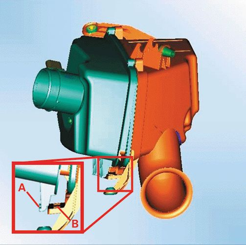
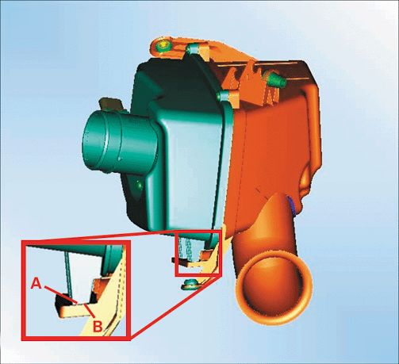

Engine - Air Cleaner Cover Installation Precaution
INFORMATIONBulletin No.: 08-06-01-020A
Date: October 04, 2010
Subject: Information to Prevent Incorrect Installation of Air Cleaner Cover to Air Cleaner Housing
Models:
2004-2007 Cadillac CTS (Excluding V Series)
2004-2009 Cadillac SRX
2004-2011 Cadillac STS (Except V Series)
Supercede:
This bulletin is being revised to clarify the Subject text and update the model year information. Please discard Corporate Bulletin Number 08-06-01-020 (Section 06 - Engine/Propulsion System).
The air cleaner (outlet side) may be difficult to reinstall in the proper position if it has been fully removed from the housing. The tabs on the cover must be correctly aligned with the hinge slots in the (inlet side) housing. It is possible to incorrectly reassemble the cover to the housing without the cover being seated properly at the hinge. This condition may not be visible when viewing the box from the top.
Caution
A continued supply of unfiltered air to the engine may result in accelerated wear to some internal components.
To reduce the risk of an improperly sealed airbox, verify that the cover is seated correctly in the housing before reinstalling the cover bolts. The following illustrations represent the proper and improper installation of the tabs.
Incorrect Installation of Airbox Cover

Tabs
Hinge Slots
To inspect that the cover is properly seated once the cover bolts have been tightened, gently pull up on the cover/MAF sensor adapter. This will give a positive indication that the tabs of the cover are properly seated in the hinge slots.
Correct Installation of Airbox Cover

Tabs
Hinge Slots
Tip
If just replacing the filter element, the (outlet side) cover does not need to be completely removed from the housing. The cover will pivot sufficiently to allow for removal and installation of the filter element.

Disclaimer